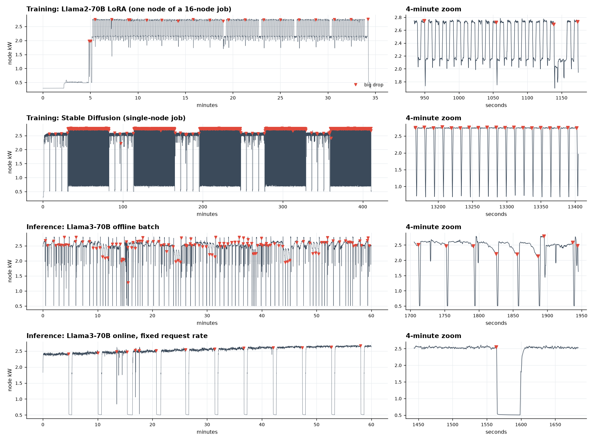
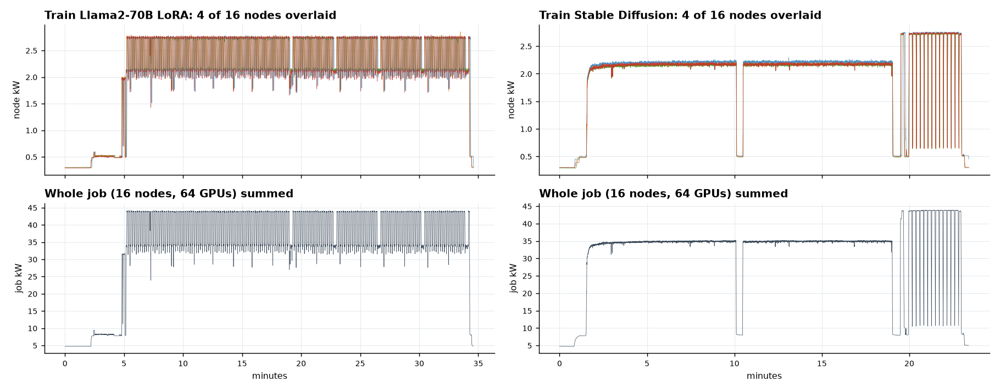

The dataset: what we actually measured
Everything we claim rests on one public dataset. If you can explain it in a minute, and know its limits, you can survive most investor and reviewer questions.
Simple view
A US national lab (NLR, formerly NREL) ran real AI jobs on its supercomputer and recorded how much electricity each GPU used, 5 to 10 times per second.1 Each computer ("node") has 4 NVIDIA H100 GPUs. They ran two kinds of work:
- Training: teaching a model (Llama2-70B fine-tuning, Stable Diffusion). Power goes up and down in a regular heartbeat.
- Inference: answering requests with Llama3.1-70B. Power jumps when a batch of requests runs, then drops when it idles.
We used about 340 node-hours of these recordings. We cleaned them, put them all on the same clock (5 readings per second), and marked every moment the power suddenly fell. Those sudden falls are the "power swings" that worry the grid.
One sentence for an investor: "We trained on 340 hours of real H100 power recordings from a US national lab, covering both training and inference."

Deep view
1. Who, where, how
The data comes from NLR's Kestrel HPC system, measured September 2025 to January 2026 with a tool called WattAMeter, and published under CC BY 4.0 (free to use if we cite it).12 GPU power comes from NVIDIA's own counter, NVML.3 Training jobs are standard MLCommons benchmarks;4 inference uses vLLM's benchmark scripts.5
2. The five workloads
| Workload | What it is | Node-hours | Independent units | Rate |
|---|---|---|---|---|
| Llama2-70B LoRA training | Fine-tuning on 2 to 16 nodes | 111 | 21 jobs | 5 Hz |
| Stable Diffusion training | Image model training on 1 to 16 nodes | 175 | 25 jobs | 5 Hz |
| Inference, offline batch | 1,200 batch runs back to back | 14 | 1 session | 10 Hz |
| Inference, online finite | 1,026 runs of 1,000 prompts | 20 | 1 session | 10 Hz |
| Inference, online fixed rate | 200 runs of 180 s each | 18 | 1 session | 10 Hz |
Total: 470 node-traces, about 6.1 million readings, about 338 node-hours.
3. What the raw files look like
Each GPU log is a text file: a timestamp, then power for gpu-0 to gpu-3 in milliwatts, then temperatures. There are also CPU logs (RAPL). We used GPU power only, because the authors' ready-made training files add CPU power in, which would blur the GPU signal. Full details are in data/README_data.md.
4. What we did to clean it
- Readings above 800 W or below 0 W per GPU are sensor glitches (the authors' own rule), so we drop them.
- Average everything onto one grid of 0.2 s (5 Hz). Inference was 10 Hz, so we average pairs.
- Fill short gaps by repeating the last reading (never peeking at the next one, so no future info leaks in). In practice no gap was longer than 1 s.
- Line up all nodes of one training job on the same clock.
- Cut each long inference session into 1-hour blocks so it can be split like separate traces.
5. How we split train / validation / test
Training: whole jobs go to one side, never half a job (otherwise the model would see the test job's own rhythm). About 60/20/20, balanced by model and node count. Inference: split in time, first 60% of hours for training, next 20% validation, last 20% test.
The number a reviewer will ask for: the test set is only 9 training jobs (4 Llama, 5 Stable Diffusion) plus the last 20% of 3 inference sessions. That is about 12 truly independent units. Millions of readings, but few independent experiments. Error bars must be computed per job, not per reading.
6. Surprises in the data
- Nodes move in lockstep. In a 16-node job every node drops at the same instant (98% of drops line up within 0.4 s). So a big job hits the grid as one giant swing. This is why we used at most 4 nodes per job for training models: the rest are near copies.
- Llama training has a 12 s heartbeat between about 2.75 kW and 2.15 kW per node (a 22% swing). That is below our 30% "big drop" bar, but still breaks a 10% per second grid limit.
- Inference drops are mostly the benchmark pausing between scripted runs. They are real swings, but their timing comes from how the test was scripted, not from real users.

7. What is NOT in the dataset
Say this honestly when asked: no facility meter or PDU power, no checkpoint or step markers, no power-cap settings, no crash events, no other GPU types, no real production traffic. The folder 03_whole-facility_profiles is simulated, not measured, so we did not use it. And 5 Hz cannot see swings faster than about 0.4 s; Microsoft reports training swings at around 20 Hz,6 so true ramps are probably steeper than we measured.